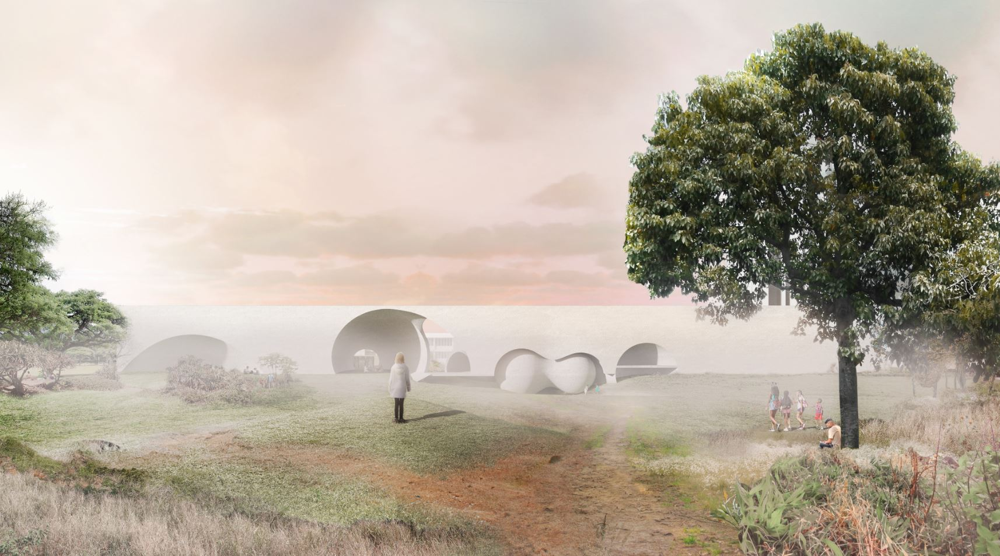
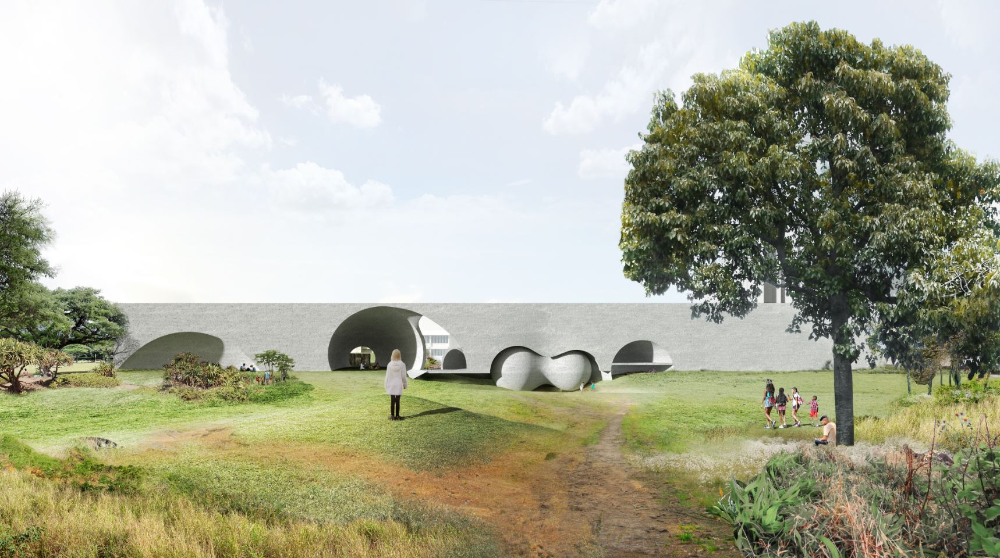
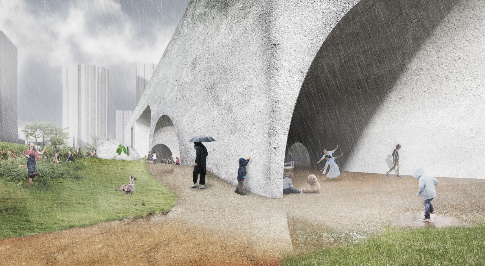
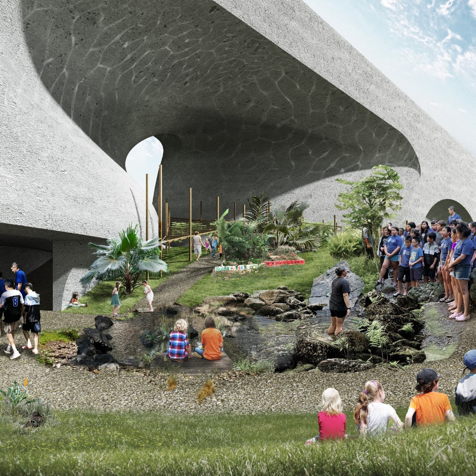
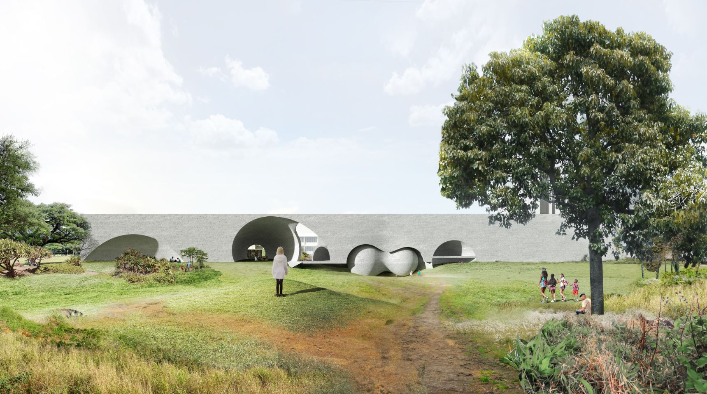
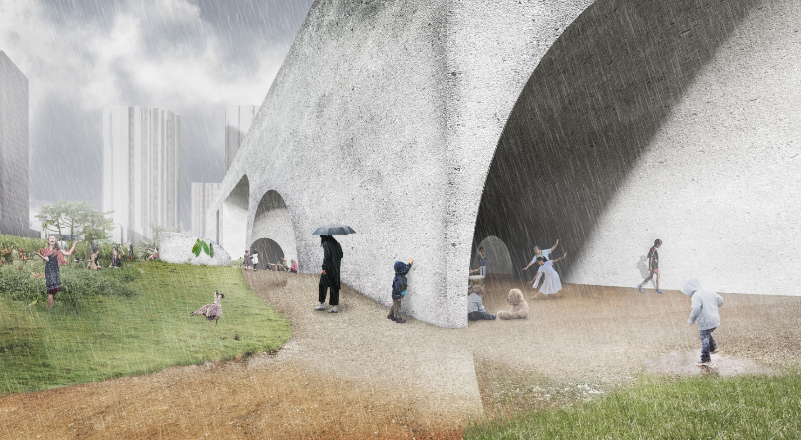
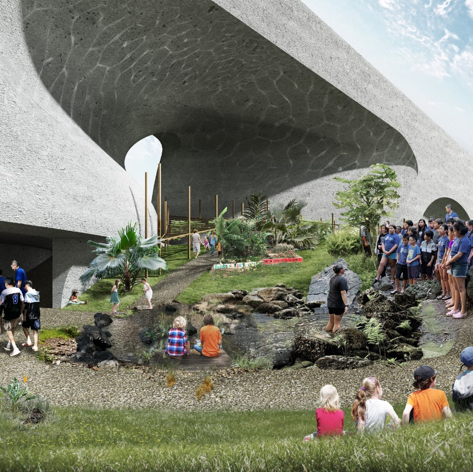

Academy of Sound
Advanced Studio 5 "Waikiki 2121: An Academy for a Hawai'i Future"
Columbia GSAPP
Critics: Chris Leong and Dominic Leong in collaboration with Sean Connelly | Partner: Charlotte Ho
2020
This studio is part of a project in collaboration with Pacific
Islander American architect, artist and urban ecologist Sean Connelly,
to radically re-imagine the urbanism of Honolulu, Hawai'i, the most
remote island in the world on the frontier of the COVID and climate
crisis. The studio explored a trans-scalar and intersectional approach
to interrupt existing US urbanism through a network of pedagogical
sites for indigenous knowledge at an architectural scale.
The native Hawaiian practice of mo’olelo, or storytelling, is the
product of a culture that celebrated their heritage and knowledge in
song and dance. communal and spiritual activities. The ancient voices
of the past generations are recalled through these communal and
spiritual traditions that have stayed consistent following more than
a century of repression and submission.
Within this renewed Waikiki Ahupua’a, the Academy of Sound intends
to celebrate the richness of native Hawaiian culture through an
immersive pedagogical framework. Acting as the nexus for communities,
class, and race despite segregation in this urban context, this
academy invokes the spirit of past Hawaiian life in sound and atmosphere,
and intends to cultivate and research native Hawaiian practices to
remedy the past historical and social discrimination.
Seeking to build a cohesive vision using the multiplicity of timbres
and creators, the academy will foster creativity of expression through
craft and experiential pedagogy in order to collectively rebuild a
foundation for the society of the future. Embracing the vast urbanism
of Waikiki today, this academy will invite the community at large to
invoke their voices and thoughts in a democratic forum, where
stories, song and dance are given renewed voices. Varied in geometry,
texture and space, this academy utilizes geopolymer concrete in
order to create sound spaces of reflection, absorption and isolation.
 




